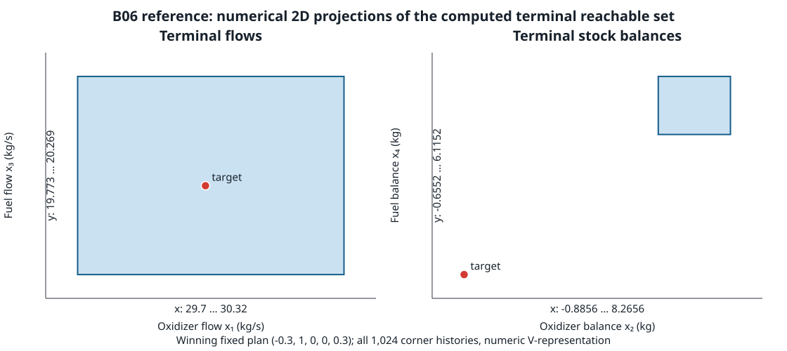

This is a distinct reference case for the displayed L09 dynamics plus the owner's 2026-10-25 disturbance decision. It is not a reproduction of the paper's run or its reported 10.11 value.
The finite-action solver examined 3,125 control plans and 1,024 disturbance-corner histories per plan. An independent integer-scaled exhaustive oracle found the unique minimax plan (-0.3, 1, 0, 0, 0.3), matching the printed L09 plan. The exact squared objective is 1100939049/9,000,000 = 122.326561000000; its norm is 11.060133859949. The paper reports 10.11 for different, unrecovered uncertainty/run details.

Seven single-call Release observations after one excluded warmup. Median 1,196,536,901 ns; range 1,188,696,999–1,253,915,262 ns. Each interval includes request construction and the public finite-action minimax call, and excludes process startup, JSON serialization, the independent exact oracle and rendering. The result is a single-adapter timing on this host; no comparator or source-mapped limiter was collected, so it supports no speedup claim.
Assumptions and provenance are in the scenario manifest. Raw rows: measurement capture; independent exact oracle; projected-set source vertices; capture metadata; host and build environment; offline ZIP.
Measured implementation commit 7df01ba3af5e4c46e867e2d737aca56a8f2461af; run harness SHA-256 b157f7259a0b0033c289ab327d57d613d43907166f58024114c2271f0652e88f; scenario SHA-256 27cb9d50cf8241914695f4e0706e3852de190fdec0c53e5f689e9624aa404f71.